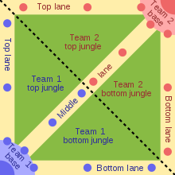
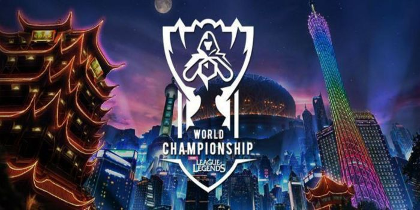

Infos Entreprise:
Meilleur employé du jour: Julien
Meilleur employé de la semaine: Julien
Meilleur employé du mois: Julien
Meilleur emploté de l'année: Julien
Prime d'Ancienneté : Tristan
League of Legends
Description:
League of Legends est un MOBA(Multiplayer Online Battle Arena) sorti le 27 octobre 2009 sur Windows et IOS. Le développeur du jeu est Riot Games et le jeu est un 5 contre 5 où le but est de détruire la base adverse appelée "Nexus". Dans ce jeu, pour détruire la base adverse, on peut incarner des personnages appelés "champions". A l'heure à laquelle je parle, ils sont au nombre de 157, Il y a un style de jeu différent pour chacun des champions donc vous trouverez forcément un qui vous plaît.
Wikipedia,League of Legends
Compétitif:
League of Legends est actuellement le jeu le plus regardé en compétitif. Rien qu'en 2020, les championnats du monde de League of Legends appelée "Worlds" ont cumulés 160 millions d'heures de visionnage durant les matchs des 22 équipes présentes dans ce tournoi. Ce championnat c'est déroulé à Shangaï et malgré les difficultés d'organisation dues au Covid-19 Riot Games s'en ai sorti pour acueillir 6300 personnes.
World Championship 2020
Guides pour commencer: Cliquez ici